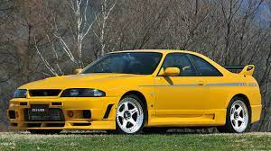
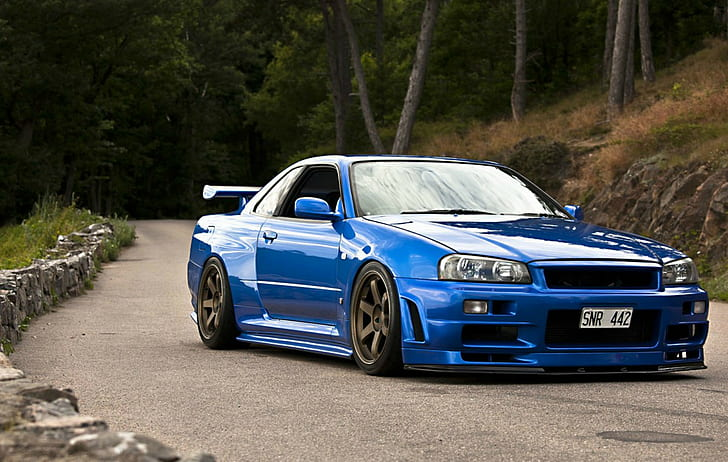
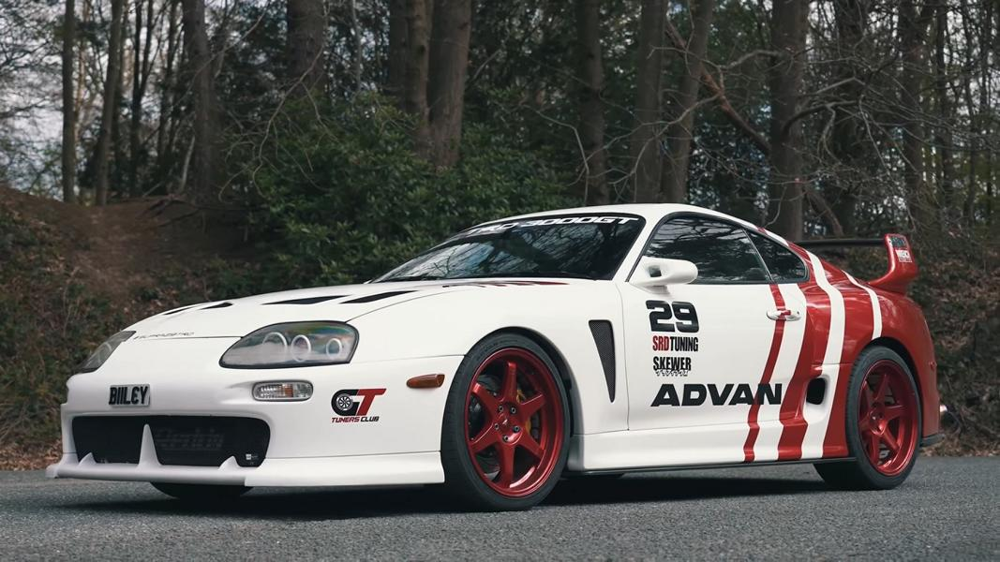
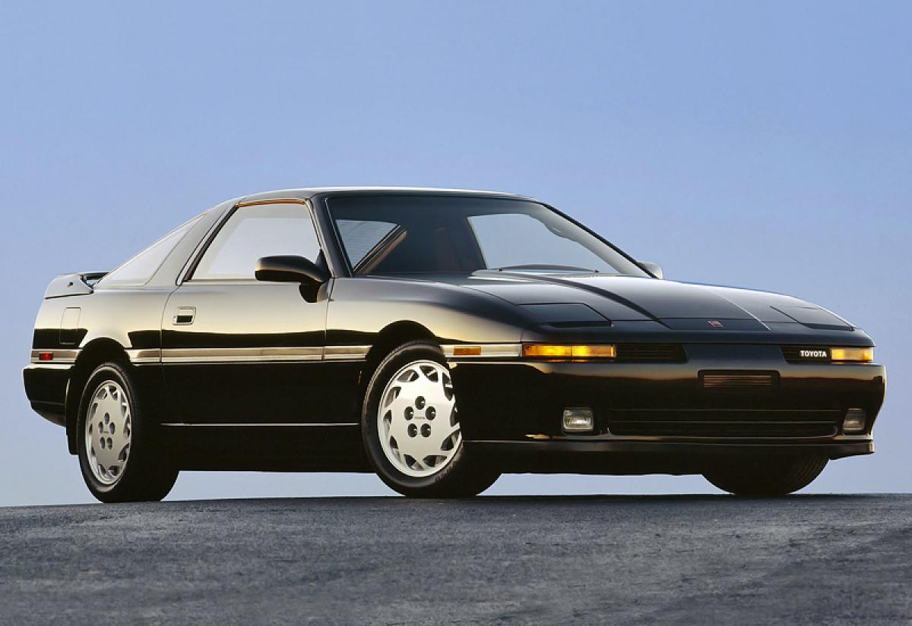
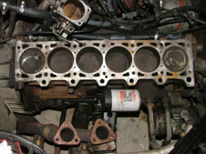

Japanese Domestic Market
Estos son varios ejemplos de JDM
Introducción
Puntos de este blog:
Para empezar vamos a definir que es JDM, lo cual significa Japanese Domestic Market
A partir de los años 90, los fabricantes de los coches japoneses lucharon intensamente con el propósito de producir los mejores automóviles de gasolina del mercado de esa generación. Esto produjo que las especificaciones de los JDM en japón causaran furor en otros países e hicieran apetecible su importación.
Los tuners y entusiastas del mundo del motor se dieron cuenta rápidamente de esto y se comenzaron a importar piezas especificas de Japón para tener unas especificaciones equivalentes a los coches del mercado Japonés. Este fue el comienzo de la revolución JDM. Se empiezan a ver mejoras de rendimiento con los componentes de JDM-Spec, los típicos bodykits salvajes tuning empezaron a ser reemplazados por bodykits de fabrica sutiles y acercándose mas a un estilo racing con el fin de obtener el máximo rendimiento de su vehículo.
Ponte a prueba:
Dentro de los JDM la família de coches que más destacan son:
Nissan Skyline
Nissan Skyline R33
El Skyline R33 fue presentado en agosto de 1994. Un poco más pesado que el R32, está disponible en estilos de carrocería cupé y berlina. El R33 fue el modelo más seguro con un 3,8 sobre 5,5; el sistema de airbag y las barras antivuelco internas hicieron el vehículo significativamente más seguro que los modelos anteriores. Todos los modelos utilizaban un motor de 6 cilindros. Nissan tomó la inusual decisión de bajar la clasificación del modelo GTS de tener solo el motor RB20E, mientras que el R32 GTS con doble árbol de levas se dejó de fabricar junto al RB20DET 2.0 turbo, siendo sustituido por el GTS-25t, que se equipó con un RB25DET más grande y montó el sistema HICAS por defecto en todos los submodelos GTS-25t, excepto el Type G.
Nissan Skyline R34
En mayo de 1998, los modelos HR34, ER34, ENR34 y BNR34 marcaron la introducción del RB25DET NEO que es más eficiente en el consumo de combustible y más respetuoso con el medio ambiente. El motor RB20E se dejó de fabricar para el modelo base del R34 (GT) y el RB20DE, después del último uso en el Skyline R32, se reintrodujo en la versión actualizada de NEO. Desapareció la transmisión automática de 4 velocidades disponible en algunos modelos y se actualizó con controles manuales de estilo tiptronic.62 Había una variante de exportación del 25GT Turbo cupé (denominada GT-T) que se vendió en Singapur y Hong Kong entren 1998 y 2000, mientras que el modelo posterior del 25GT Turbo se vendió en Nueva Zelanda entre 2001 y 2002 junto a la versión GT-R V-Spec. Estos fueron los 3 únicos países donde se vendió el modelo R34 25GT Turbo fuera de Japón. Todas las Nissan Prince Store japonesas que vendieron el Skyline se rebautizaron como Nissan Red Stage. Nissan presentó dos nuevos modelos para el vehículo base, el 25GT-X y el 25GT-V. El 25GT-X solo estaba disponible como berlina e incluía extras opcionales sobre el 25GT y el 25GT Turbo, como ventanas tintadas traseras y pantalla LCD emergente que reemplazó el triple grupo en los modelos turbo. El 25GT-V era una variación atmosférica que venía de serie con los frenos delanteros Sumitomo de 4 pistones mejorados y las ruedas de 17 " que solo se encuentran en los modelos turbo.
Toyota Supra
Toyota Supra Mk4
El nuevo Supra fue completamente rediseñado por Isao Tsuzuki,12 se quitaron los faros retráctiles, se le dio una carrocería mucho más resistente, más pesada que las anteriores y más redondeada. Se le instalaron dos nuevos motores de 2997 cm³ (3 litros) atmosférico 2JZ-GE de 223 CV (220 HP; 164 kW) a las 5800 rpm y un par máximo de 29 kg·m (284 N·m; 210 lb·pie) a las 4800 rpm,13 o bien, la versión RZ biturbo 2JZ-GTE de 280 CV (276 HP; 206 kW) a las 5800 rpm y un par máximo de 46 kg·m (451 N·m; 333 lb·pie) a las 3600 rpm.14 Para el modelo de exportación a Norteamérica y Europa, se usaron turbocompresores con aspas de acero e inyectores de combustible más pequeños y una bomba de combustible más grande.
Toyota Supra Mk3
En mayo de 1986, Toyota estaba listo para lanzar su próxima versión del Supra. Los enlaces entre el Celica y Supra fueron cortados, por lo que fue el primer Supra que llegó como un modelo independiente; estos dos modelos eran completamente diferentes. El Celica cambia a tracción delantera, mientras que el Supra mantuvo su tracción trasera. A pesar de que la primera y segunda generación tenían diseños similares, el motor se había actualizado con 2954 cm³ (3 litros) y 204 CV (201 HP; 150 kW), también con seis cilindros en línea, aunque solamente estaba disponible con aspiración natural de ajuste en 1986. Una versión turbo de este mismo motor se introdujo en el año 1987, que proporcionaba 235 CV (232 HP; 173 kW). El Supra estaba relacionado mecánicamente con el Toyota Soarer.
Estos son los motores usados en cada coche de la sección anterior:
- Motor de 6 cilindros
- Motor de 8 cilindros
Motor de 6 cilindros
Se denomina motor de seis cilindros en línea a una configuración de motores de combustión interna en la que los seis cilindros y pistones están dispuestos en una sola fila en posición vertical, inclinada o incluso parcialmente inclinada o en posición horizontal. El motor de seis cilindros es el diseño de motor más simple que posee un equilibrado del motor, tanto primario como secundario, lo que resulta en muchas menos vibraciones que los motores con menos cilindros. Este tiene mejor trabajo que los que tienen menos cilindros.
Motor de 8 cilindros

El V8 es una configuración muy común para camionetas, automóviles de gran tamaño y en vehículos tipo "muscle cars". Su cilindrada en raras ocasiones es inferior a los 3.0L y ha llegado a superar los 9.0L. El motor V8 ha servido como motor principal para los automóviles estadounidenses desde que la Ford Motor Company desarrolló la revolucionaria máquina plana de 8 cilindros en V para su cupé Ford en 1932. Desde entonces, Chevrolet ha producido millones de V8 de bloques grandes y pequeños, incluyendo el estándar de todos los motores, mientras que Chrysler perfeccionó los motores v8 una versión de Hemi para crear más sus autos de potencia.
Tabla comparativa de los motores
| Motor RB26DETT | Motor 2JZ-GTE | |
|---|---|---|
| Usado por | Nissan Skyline R34 | Toyota Supra Mk4 |
| Potencia | 316 Caballos a 6800 Rpm | 330 Caballos a 6800 Rpm | Tipo de combustible | Gasolina | Gasolina |
| Consumo | 7L por 100KMs | 5,7L por 100KMs |
| Datos | Datos | Datos |
Redes sociales: @user.user Contacto: user@gmail.com